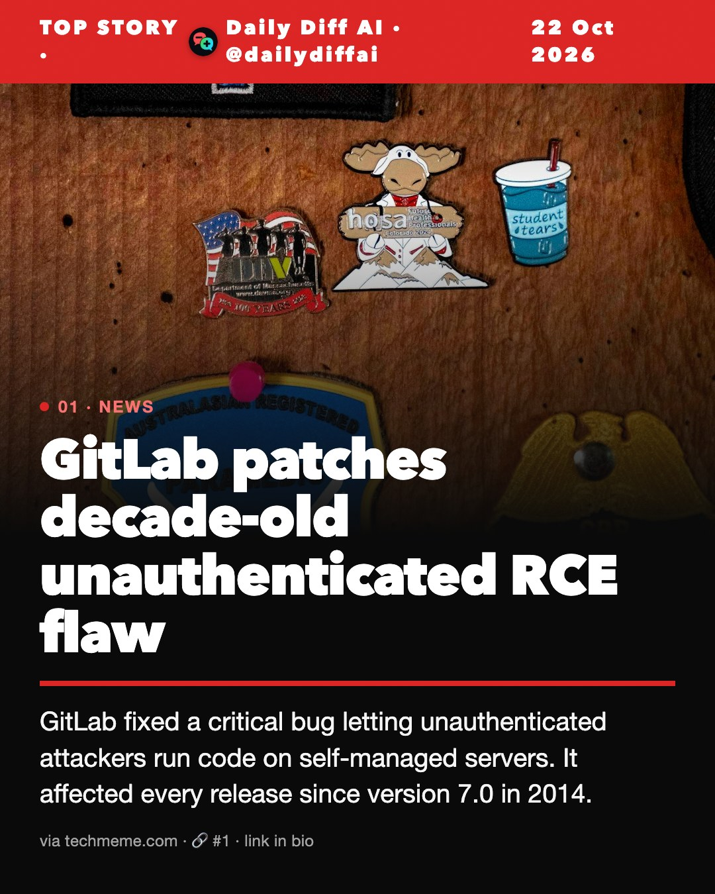
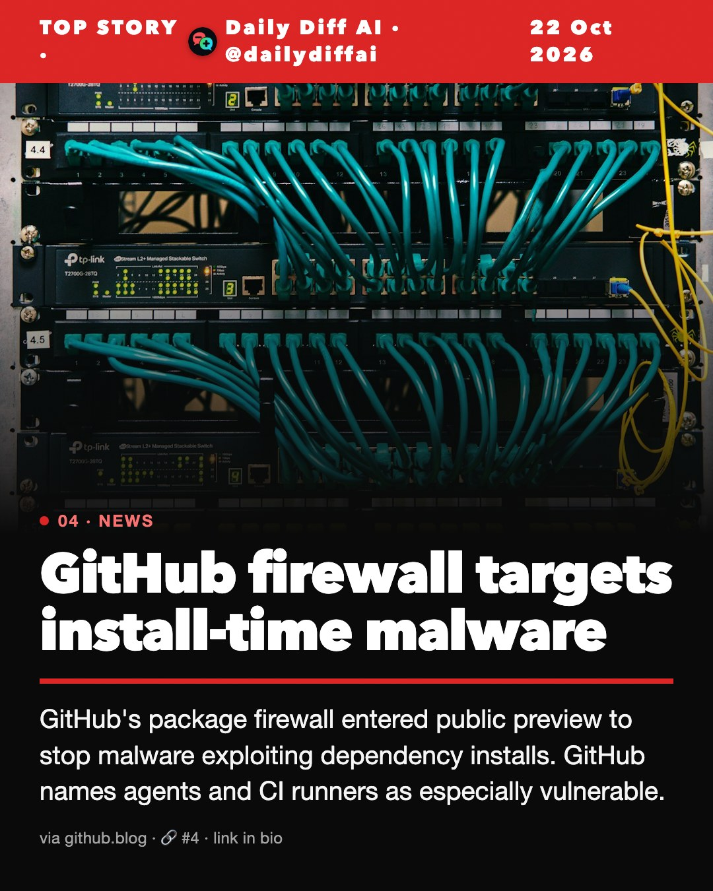
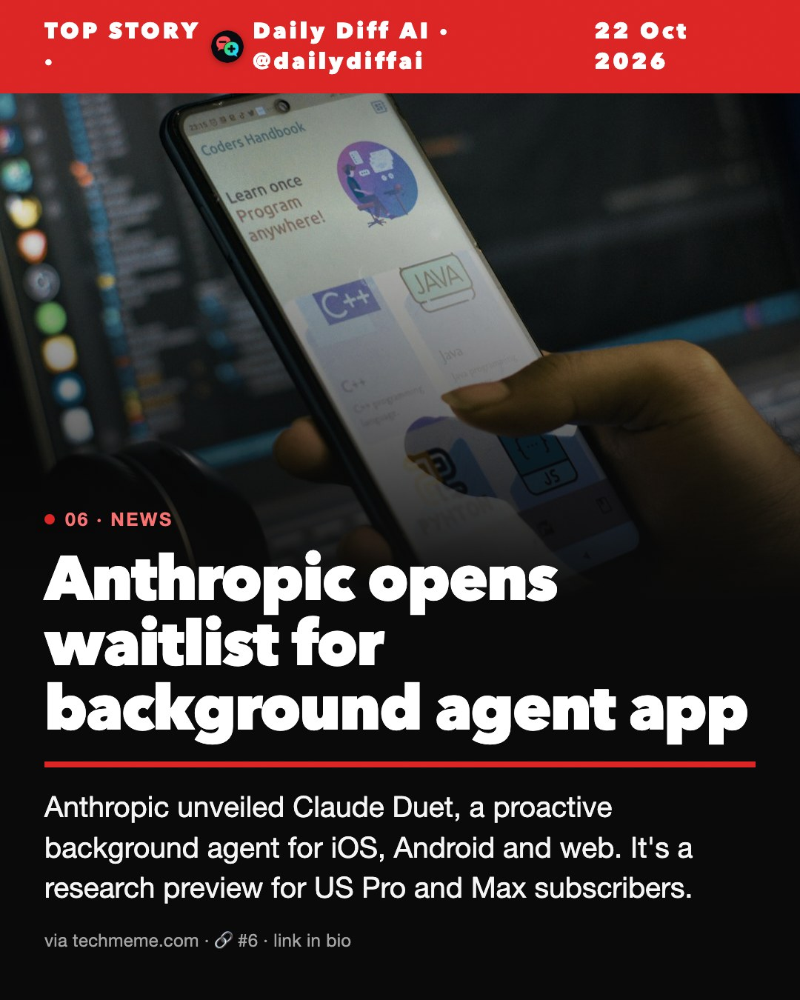
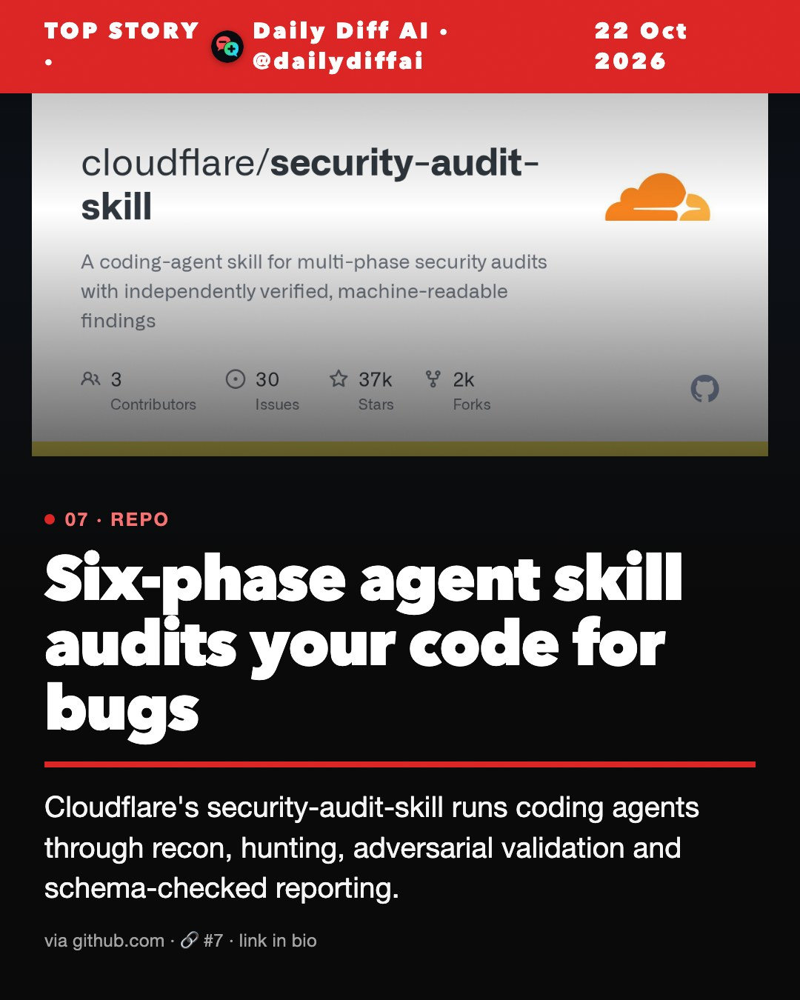
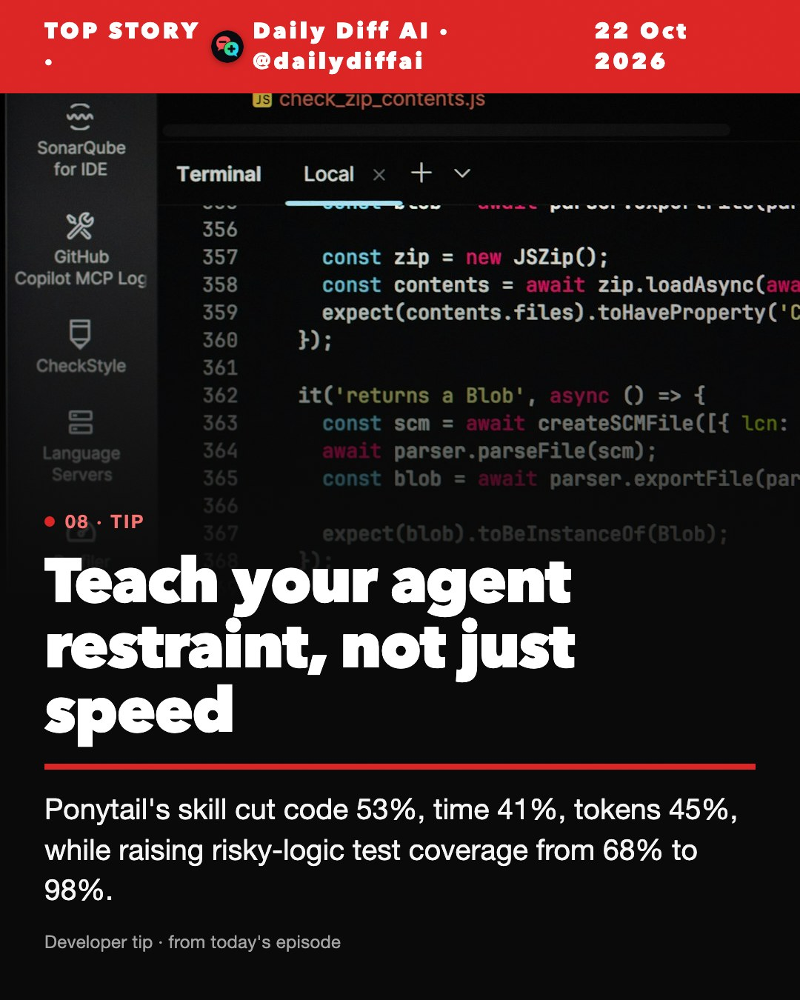

Daily Diff AI

GitLab patches decade-old unauthenticated RCE flaw
GitLab fixed a critical bug letting unauthenticated attackers run code on self-managed servers. It affected every release since version 7.0 in 2014.
Read on techmeme.com →PHP ships emergency patch after exploit leak
PHP released fixes across the 8.x line for two remote code execution holes. Exploits were already circulating before the patch, per Simon Willison.
Read on simonwillison.net →Certificate authority's intermediate keys compromised
Private keys of 8 eMudhra intermediate CA certificates were compromised. They chain to roots trusted by Mozilla, Microsoft, Apple and Chrome.
Read on simonwillison.net →
GitHub firewall targets install-time malware
GitHub's package firewall entered public preview to stop malware exploiting dependency installs. GitHub names agents and CI runners as especially vulnerable.
Read on github.blog →Railway says some customer secrets were decrypted
Railway disclosed unauthorized access to customer encrypted environment variables. For some customers, the decrypted contents were obtained.
Read on techmeme.com →
Anthropic opens waitlist for background agent app
Anthropic unveiled Claude Duet, a proactive background agent for iOS, Android and web. It's a research preview for US Pro and Max subscribers.
Read on techmeme.com →
Six-phase agent skill audits your code for bugs
Cloudflare's security-audit-skill runs coding agents through recon, hunting, adversarial validation and schema-checked reporting.
Read on github.com →
Teach your agent restraint, not just speed
Ponytail's skill cut code 53%, time 41%, tokens 45%, while raising risky-logic test coverage from 68% to 98%.